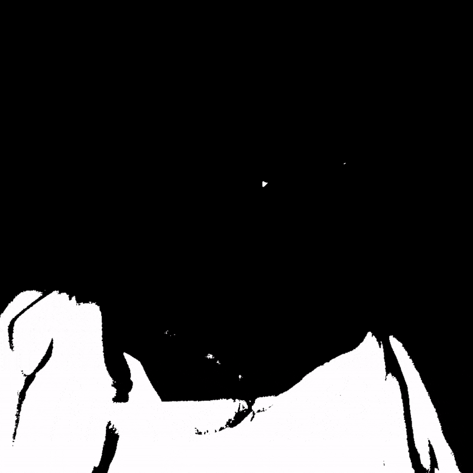

Film & Montage
-

- 
-

Film is altijd een trouwe interesse van me gebleven, graag neem ik beelden op met mijn vrienden en maak ik visueel interessante edits.

Film is altijd een trouwe interesse van me gebleven, graag neem ik beelden op met mijn vrienden en maak ik visueel interessante edits.
Voornamelijk teken ik in een ruwe stijl waarbij ik gezichten en expressies het meest interresant vind.
Al deze tekeningen zijn gemaakt in één van mijn schetsboekjes en met Adobe Capture verwerkt tot SVG afbeelding.
Zelfontworpen tapijt, gemaakt op gespannen doek met een Tuftgun.


Album covers ontwerpen


Eigen designs op denim printen met lasersnijder

Spelen met vorgevingsstijlen

Skateboard deck designs
Nieuwe hobby gevonden in analoge fotografie.